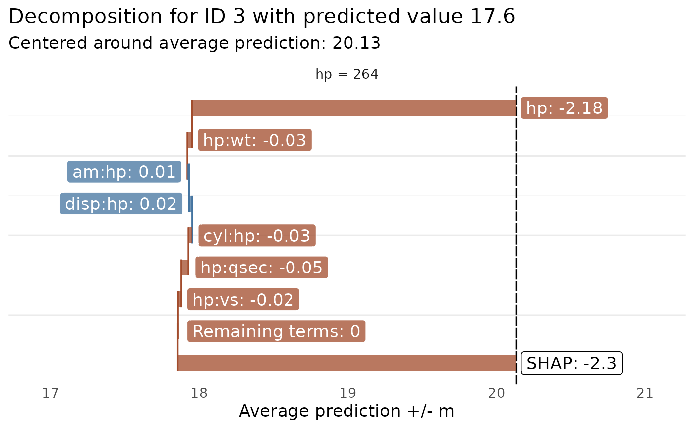

Plots the prediction components for a single observation, identified by the row number in the dataset used
with glex().
Since the resulting plot can be quite busy due to potentially large amounts of elements, it is highly
recommended to use predictors, max_interaction, or threshold to restrict the number of
elements in the plot.
Usage
glex_explain(
object,
id,
threshold = 0,
max_interaction = NULL,
predictors = NULL,
class = NULL,
barheight = 0.5
)Arguments
- object
Object of class
glexcontaining prediction components and data to be explained.- id
(
integer(1)) Row ID of the observation to be explained inobject$x.- threshold
(
numeric(1): 0) Threshold to filter output by in case of many negligible effects.- max_interaction
(
integer(1): NULL) Optionally filter plot to show terms up to the specified degree of interaction. Similar tothreshold, all other terms will be aggregated under a"Remaining terms"label.- predictors
(
character: NULL) Vector of column names in$xto restrict plot to.- class
(
character: NULL) For multiclass targets, specifies the target class to limit output.- barheight
(
numeric(1): 0.5) Relative height of horizontal bars. Preferred value may depend on the number of vertical elements, hence it may be necessary to adjust this value as needed.
Value
A ggplot object.
See also
Other Visualization functions:
autoplot.glex(),
autoplot.glex_vi(),
plot_pdp()
Examples
set.seed(1)
# Random Planted Forest -----
if (requireNamespace("randomPlantedForest", quietly = TRUE)) {
library(randomPlantedForest)
rp <- rpf(mpg ~ ., data = mtcars[1:26, ], max_interaction = 2)
glex_rpf <- glex(rp, mtcars[27:32, ])
glex_explain(glex_rpf, id = 3, predictors = "hp", threshold = 0.01)
}
